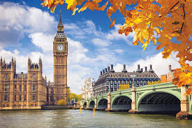

Localizado no estado do Rio de Janeiro, Brasil, o Cristo Redentor é considerado a melhor atração turística do Brasil, e o nono ponto turístico mais bem avaliado do mundo.
Esse monumento levou cerca de 9 anos para ser finalizado, começado em 1922 e terminado em 1931. Ele foi construído para ser um símbolo do cristianismo, representar a cidade do Rio de Janeiro e comemorar o centenário da independência do Brasil.
A ideia de construir uma estátua no alto do Corcovado surgiu em meados do século XIX, quando o padre francês Pierre Marie Boss teve o sonho de homenagear a Princesa Isabel. A proposta foi resgatada em 1888 pela princesa Isabel e começou a se materializar nos preparativos para o centenário da independência do Brasil, em 1922.
A construção do Cristo Redentor foi financiada por doações da população brasileira, organizadas pela Arquidiocese do Rio de Janeiro. O projeto foi realizado pelo engenheiro Heitor da Silva Costa e pelo escultor francês Paul Landowski. A estátua foi inaugurada no dia 12 de outubro de 1931, com mais de 100 anos de existência.
De acordo com um visitante:
"Ao chegar, no topo, você terá que subir algumas escadas para ficar frente a frente com o Cristo. Mas cada minuto e esforço vale à pena. A vista da cidade, do Pão de Açúcar, da Baía de Guanabara, a lagoa Rodrigo de Feitas, e até o Maracanã ... e o próprio Cristo Redentor. Esse passeio a é a essência da cidade. Não deixe de conhecer."
Certamente, um ótimo lugar para se visitar em nosso país!
Nova York - Estados Unidos
Nova Iorque ou Nova York é um dos 50 estados dos Estados Unidos, localizado na Região nordeste do país. É o maior centro financeiro e comercial do país, e o quarto maior centro industrial dos Estados Unidos, atrás apenas de Califórnia, Texas e Ohio.
Poucos lugares no mundo têm o potencial de agradar tanto quando Nova York. Em uma viagem à Nova York você pode conhecer dezenas de atrativos, mas já adianto que será difícil ver tudo que a cidade oferece em poucos dias. A Estátua da Liberdade, símbolo de esperança para os imigrantes que chegaram aos Estados Unidos, é um passeio imperdível, assim como caminhar pelos jardins Central Park, um parque enorme no coração de Manhattan, e ver os letreiros incessantes da Times Square, que fazem parecer que é dia mesmo quando é noite. Se você tiver pouquíssimo tempo e puder ver apenas três atrações da cidade, meu conselho seria visitar essas três.
Paris - França

Paris, a capital da França, é uma importante cidade europeia e um centro mundial de arte, moda, gastronomia e cultura. Sua paisagem urbana do século XIX é cortada por avenidas largas e pelo rio Sena. A cidade é conhecida por monumentos como a Torre Eiffel e a Catedral de Notre-Dame, uma construção gótica do século XII, sendo famosa também pela cultura dos cafés e por lojas de estilistas famosos na Rue du Faubourg Saint-Honoré.
A Torre Eiffel, o Museu do Louvre, o Palácio de Versalhes, a Catedral de Notre-Dame de Paris, a Ópera Garnier e o Jardim de Luxemburgo são apenas o início do roteiro para uma viagem incrível a Paris. Não falta o que fazer na capital da França e você sempre terá a sensação de que precisa voltar.
Impossível chegar a Paris e não querer ir direto à Torre Eiffel. Aproveite cada cenário da cidade para um lindo registro de um dos mais famosos monumentos do mundo. Vale ver a Torre Eiffel a partir do Champ de Mars, do Trocadero, da Ponte Alexander III, da Ponte de Bir Hakeim e da Rua de l’Université, entre outros. Sempre lembrando que ela fica ainda mais linda ao anoitecer!
Se você é do time que ama um belo cenário, ver Paris do alto é sempre um evento imperdível! Para isso, vale subir ao topo do Arco do Triunfo, do Panteão de Paris, das Galeries Lafayette, da Sacré Coeur - Basílica do Sagrado Coração e ainda da Torre Montparnasse, que tem um pôr do sol espetacular!
Para quem ama obras de arte e história, Paris reserva preciosidades, como o Museu d’Orsay, Museu Rodin, Pompidou, Museu do Quai Branly, Museu da Orangerie e ainda o Museu Nacional Picasso, entre muitos outros museus de Paris que merecem a sua visita.
Os viajantes que amam parques e jardins certamente ficarão encantados com a cidade. Há diversos parques belíssimos e todos valem o passeio, a começar pelo Jardim de Luxemburgo, o Jardim das Tulherias, o Jardim do Carrossel e a Praça des Voges. Para uma caminhada relaxante, vale conhecer também o Canal Saint-Martin.
Aliás, se o que você gosta mesmo é de caminhar, há regiões e ruas incríveis em Paris que são um convite para longos passeios. Experimente as regiões de Montmartre, Marais, o Quartier Latin e Saint-German-des-Près ou caminhe pela sempre elegante Avenida Champs Élysées, a Rua de Rivoli e todas as pontes e margens do Rio Sena.
Londres - Inglaterra
Londres, capital da Inglaterra e do Reino Unido, é uma cidade do século 21 com uma história que remonta à era romana. Seu centro abriga as sedes imponentes do Parlamento, a famosa torre do relógio do Big Ben e a Abadia de Westminster, local de coroação dos monarcas britânicos. Do outro lado do rio Tâmisa, a roda gigante London Eye tem vista panorâmica do complexo cultural da margem sul e de toda a cidade.
Londres entra no nosso imaginário ainda na infância. Peter Pan e Mary Poppins voaram sobre o Big Ben, Harry Potter percorreu seus becos — ou uma versão mágica deles. Quando crescemos, começamos a ouvir Beatles, a ler Shakespeare, talvez, e descobrimos que reis e princesas são reais. Isso explica por que conhecer Londres é o sonho de tantos brasileiros. E quer saber? É tudo o que a gente pensa e muito mais.
A capital do Reino Unido é histórica e moderna ao mesmo tempo, tradicional e disruptiva. Você pode ver quadros de Da Vinci e Van Gogh em galerias centenárias ou os grafites que colorem cada pedacinho branco de parede em Shoreditch. Ao mesmo tempo que não é um destino barato — a libra esterlina consegue ser mais cara do que o euro —, tem parques públicos gigantes e não cobra ingresso nos seus melhores museus.
Um bom ponto de partida é o Palácio de Buckingham, o St. James Park, o Big Ben e a Abadia de Westminster, que ficam pertinho uns dos outros. Seguindo as curvas do Rio Tâmisa para o Leste, você encontra a famosa ponte Tower Bridge e, ao lado, o castelo urbano Torre de Londres. Para vencer os principais pontos turísticos do centro de Londres, são necessários, pelo menos, quatro dias na capital.
Nessa mesma região, fica o museu de arte moderna Tate Modern, mas os outros estão espalhados: British Museum, a National Gallery, o Museu de História Natural são absolutamente imperdíveis. A gente recomenda uma semana para quem quer visitar os museus e conhecer diferentes versões da cidade, os bairros icônicos e refazendo os passos dos seus ídolos britânicos — a Abbey Road dos Beatles, Camden Town da Amy Winehouse, o teatro de William Shakespeare, a Londres mágica do Harry Potter.
Se tiver dez dias, great! Vai poder conhecer os atrativos que mais te interessam com calma e fazer um bate e volta a Stonehenge, aquele círculo pré-histórico de pedras gigantes, cheio de mistérios. E aposto que você vai voltar da Inglaterra com o sotaque empolado.